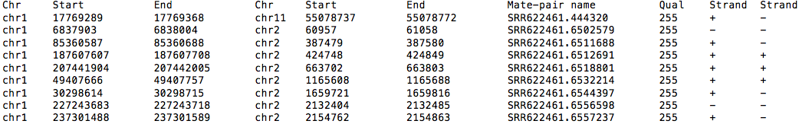
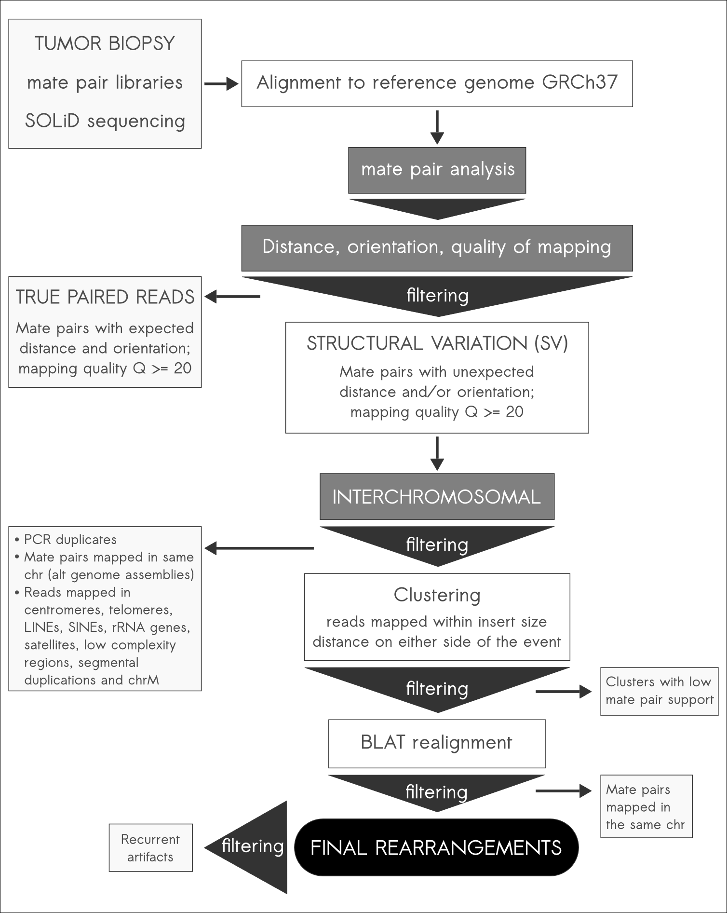

ICRmax¶
What is ICRmax?¶
ICRmax is a computational pipeline designed for the cost-effective identification of a minimal set of tumor-specific interchromosomal rearrangements (ICRs) for clinical application.
How ICRmax works¶
ICRmax was developed with a set of strict filters to eliminate false positive ICR events. The pipeline is able to remove most cases of non-somatic events without the need for sequencing the matched normal genome for each sample.
Benefits¶
The cost reduction resulting from this approach creates an opportunity to implement this analysis in the clinical setting, mainly for detection of personalized biomarkers that can be used in the management of solid tumors.
Requirements¶
All the steps necessary for the ICRmax pipeline can be performed using open-source software/pipelines and publicly available data.
Software and pipelines:
- A computer running Linux (suggested distributions: Ubuntu, Fedora or CentOS. ICRMax should work on all Linux distributions).
- BLAT (how to install: http://users.soe.ucsc.edu/~kent/src/)
- Bedtools (how to install: http://bedtools.readthedocs.org/en/latest/)
Data:
- Alternative genome assemblies (see Preparing the WGS reads).
- Recurrent artifacts (download here recurrent_artifacts.bed or recurrent_1000G.bed).
- Repetitive regions to filter (download here centr_and_tel.bed and all_to_mask.bed)
- Whole genome sequence alignment data in BAM or BED format (see below for details).
To transform paired bam files into bedpe use:
$ bedtools bamtobed –bedpe <input.bam>
Example bedpe file:
{kind=link}
Overview¶
To run ICRmax simply follow the Step-by-step command line summarized in the figure below:
{kind=link}
Preparing the WGS reads¶
Mate-pair or paired-end reads resulting from whole genome sequencing must be aligned to the reference genome. Users are free to choose the best mapping algorithm for their platform. Suggestions are NovoAlignCS and BioScope for SOLiD mate-pair reads and BWA or ... for Illumina paired-end reads.
Alignment to alternative reference assemblies is also advised since differences in assembly can give rise to mate-pair reads mapped in different chromosomes according to one assembly but not another. Some alternative assemblies that can be used for mapping are:
HuRef (J. Craig Venter Institute) [Levy et. al 2007]
GRCh37_alt (Partial reference genome with alternative representations – Genome Reference Consortium)
CRA (Human chr7 complete sequence – The Center for Applied Genomics) [Scherer et al. 2003]
Note: For the alternative assemblies, use as input only the reads belonging to mate-pairs that mapped in different chromosomes in the initial reference genome alignment. There is no need to realign the reads that have already mapped to the same chromosome.
Step-by-step command line¶
At this step you should have a paired BED file (bedpe) containing the aligned mate-pair or paired-end reads mapped in different chromosomes with mapping quality greater than or equal to 20, after the reference genome mapping and mapping to alternative reference assemblies. The duplicate reads should also have been removed. For that, samtools rmdup is a good option (see http://www.htslib.org/man/samtools)
Step-by-step here (arq. Suplementar ICRmax)¶
Initial ICRmax output¶
Example initial output:
- $1 == read1_chromosome
- $2 == read1_start_position
- $3 == read1_end_position
- $4 == read2_chromosome
- $5 == read2_start_position
- $6 == read2_end_position
- $7 == matepair_id
- $8 == qual
- $9 == read1_strand
- $10 == read2_strand
- $11 == cluster_id
Cluster ids should have 3 numbers (eg: 14774_4005_1). Each cluster id groups reads mapping around one ICR breakpoint.
Removing recurrent events¶
The final clusters of mate-pair reads can be merged at this stage so that each event has two coordinates, one in each chromosome.
The command below will separate the read coordinates (one line for each chromosome) and with the simple perl script the overlapping reads will be joined into a single coordinate for each chromosome.
$ awk '{print $1"\t"$2"\t"$3"\t"$11"\n"$4"\t"$5"\t"$6"\t"$11}' input_after_pipeline.bed > reads_in_final_clusters.bed
$ perl input.pl reads_in_final_clusters.bed > merged.bed
The merged.bed file can then be used to check for recurrent artifacts and remove them. With bedtools intersect you can compare both your file and the recurrent artifact list, and with the subsequent awk commands you select only the events with both chromosome positions equal to a single other event in the artifact list. The output contains only the ids for the events you should remove from your final list.
$ bedtools intersect –wo –a merged.bed –b recurrent_artifacts.bed | awk ‘{print $1,$4,$8}’ | sort | uniq | awk ‘{print $2,$3}’ | sort | uniq –d | awk ‘{print $1}’ | sort | uniq > recurrent_merged.bed
$ fgrep –w –v –f recurrent_merged.bed merged.bed > merged_final.bed
Detecting new recurrent events in your samples¶
Comparison between rearrangements from different samples can be easily done with the bedtools merge command as used above, make sure to allow for a distance similar to the clustering distance used (-d 1000) outside of the read span and alter the cluster names to include sample identification (ex: 14774_4005_1_RT2). This way, after the bedtools merge command using the parameters –nms you should have a single cluster and the different cluster names separated by a semicolon.
$ sortBed all_sample_rearrangements.bed | bedtools merge –d 1000 –nms > merged_samples.bed
To process this file a simple perl script is used
$ perl find_recurrent.pl merged_samples.bed > tmp_file
$ awk –F “\t” ‘{print $3}’ tmp_file | sort | uniq –c | awk ‘{if ($1>=2) print $2}’ > recurrent_in_two_or_more_samples
$ fgrep –w –v –f recurrent_in_two_or_more_samples tmp_file | awk ‘{print $1}’ > final_non_recurrent_list
Visualizing output in Circos plots¶
Circos representation (circos.ca) is a common way to visualize structural variations detected in a genome. Here we provide the configuration files necessary for generating a Circos plot similar to the one illustrated with your data.
Fig_circos_AAS
To install Circos see http://circos.ca/software/download/circos fileX.conf
Circos plot command:
$ circos –conf conf.conf
Updates¶
We intend to release updates for our recurrent artifact list as we analyze more mate-pair WGS samples (both tumor and normal).
We also encourage users to submit new recurrent artifacts with the appropriate read support to improve this resource. Get in touch with our group through email.
Data Access¶
The WGS data for samples used in our analyses were deposited in the European Nucleotide Archive (ENA; http://www.ebi.ac.uk/ena) under accession number PRJEB4781.
WGS data from the 1000 Genomes project was accessed through the Open Science Data Cloud (http://www.opensciencedatacloud.org).
Acknowledgements¶
?